Impulzus elhatározásból Lilla és én elmentünk Pekingbe. Meglátogattunk ott tanuló barátokat Vanesszát és Jankát és turistáskodtunk egy hetet. Ez a bejegyzés egyfajta élmény beszámoló lesz, de azt is leírom, hogy miként lehet kijutni. Sokat lehet írni róla, de nem olyan bonyolult, ahogy azt előre elképzeli az ember.
Kínába utazni egyszerű
1. A repülőjegy és szállás
Legelőször a repülőjegyet és a szállást vettük meg. Ez egyfajta leap of faith dolog, ami elengedhetetlen a kínai utazáshoz. Ugyanis vízum igényléshez szükség van ezekre, nélkülük nem is adják meg. Így két hónappal utazás előtt Lilla Németországban egy német oldalon át online megvette a repülőjegyeket. Én meg Magyarországról Vanessza ajánlására lefoglaltam egy Airbnb-n a szállást. Mind a kettő messze olcsóbb volt, mint amire számítottunk, ez kellemes meglepetés volt.
Airbnb és Kína nem egy egyszerű dolog egyébként, de vélhetően könnyíti a vízum eljárást, hogy Airbnb betartja a kínai törvényeket és a foglalást lejelenti a kormánynak. Tehát a rendszer már azelőtt tudja, hogy megyünk, mielőtt vízumért folyamodnánk. A nehéz aspektusa az Airbnb kínai részének, hogy nagyon kevés kínai ad szállást külföldieknek, mert félnek a nemzetközi problémáktól és emiatt az állam figyelmétől. A mi házigazdánk egy pozitív kivétel volt így.
Repülőjegynél pedig az utazást nézve a Swissair jó élmény volt odafelé, az Air China kevésbé visszafelé. Ajánlatos mind a két irányt Swissair-al megoldani, ha van rá lehetőség.
2. Vízum
Egyetlen dolog, amit nem lehet online rendezni. Ennek ellenére kínai turista vízumot igényelni csak azért tűnik bonyolultnak, mert látszólag sok dologra kell figyelni. Egyébként az egész annyiból áll, hogy követjük ezt a weboldalt lépésről lépésre, elviszünk mindent kinyomtatva, beadjuk 5-10 perc számhúzós várakozás után 3 perc alatt és várunk egy hetet, hogy kész legyen.
A jelenlegi szabályok szerint ehhez kell: foglalt szállás VAGY meghívó levél valakitől, aki kint tartózkodik (analóg levél, lehetőleg eredeti példány), érvényes útlevél, bizonyíték repülőjegy foglalásról (kinyomtatott email, amin rajta van az utazás minden adata az utazó személyek neveivel együtt). Én vittem a Revolut utas biztosítást is és egy uti tervet is, mert ezek régen kellettek, de ezeket vissza adták a kezembe a kinyomtatott email-ek irreleváns részeivel együtt. Nem harapnak. Kedvesek. Gyorsak. Csak oda kell menni érte.
Lilla Németországban kérte ki a vízumot, ő is ugyan ilyen könnyen megkapta, neki a különbség az volt, hogy online elindította a folyamatot, mielőtt bevitte volna a szükséges papírokat (mivel erre ott van lehetőség). Emellett persze arra is lett volna lehetőség, hogy neki is itt kérek vízumot, de Kína szempontjából mindegy hol kéri meg az ember a lényeg csak az, hogy honnan utazunk. Lilla is Magyarországról utazott velem, mindegy volt, hogy Németországban intézte az ügyet.
Hogy mennyivel könnyebb most vízumot kérni, mint régen egyébként az is mutatja, hogy régen banki igazolás is kellett arról, hogy minden ott töltött napra van 100 dollárja az embernek. Akik dolgozni, tanulni mennek ki pedig mai napig igazolniuk kell, hogy nem nemi betegek. Sima turista vízum 30 napra viszont már gyerekjáték… vagy ha nem is az, egy átlag felnőtt ügyintézés, NAV-al többet lehet szívni, mint ezzel.
3. A repülő út
Miután mindent elintéztünk utazásig nem foglalkoztunk Kínával, legalábbis ügyeket nem kellett intézni. Néha tervezgettük miket fogunk megnézni, de mindenki élte életét saját országában. Aztán eljött az utazás napja. Semmi nem lepett meg a Berlini út után. Feladtuk a bőröndöt, simán átjutottunk security-n, pihentünk kicsit tranzit zónában, aztán a Swissair elvitt minket Kínába. Ennyi. Jó persze írhatnék részleteket, mint hogy megnéztem Bumblebee-t repülőn, a kaja jó volt, ingyen volt a gin tonic, 5k forintot költöttem 40mb netre és még svájci csokit is kaptunk; átszállásnál pedig rohantunk. De feltételezem ezek az átlagos repülős élmények. Kellemes 12 órás út volt, kényelmetlen, ahogy minden repülő, de kellemes.
Talán az egyetlen igazi érdekesség az volt, hogy az ülés monitorokon vannak játékok és volt egy Bettleship nevű torpedó játék, amit az EA készített és Lillával jó fél órát szórakoztunk vele, mert van benne LAN mód, ahol az utasok egymás ellen játszhatnak. Neeeeeerds.
Kína, Peking
És megérkeztünk Pekingbe. A reptér hatalmas. Az első látogatásunk a WC volt. Ami guggolós. Amit én egyszer se használtam egész ottlét alatt. De erről később. Egy teljes külön blogot lehetne írni az ázsiai WC-kről, nem akarom ezzel hergelni az idegeket.
Kínaiak bürokraták. Nem negatívan mondom, csak tényszerűen. Automatikus ujjlenyomat vevő gépekkel találkoztunk, ahol az útlevelünk szkennelése után a gép mind a tíz ujjunkról mintát vett és nyugtát is adott erről. Ami mint kiderült felesleges volt, mert később a beléptetésnél ugyan ezt a folyamatot elvégezte egy tisztviselő is. Egyébként a beléptetéshez egy hosszú sor áll, ami előtt ki kell tölteni egy belépési papírt, amit rengetegen észre se vesznek, mert nem jelöli semmi. A sorban papírt szorongató emberek az egyetlen jel, hogy ezt el kell végezni és nem egy embert küldtek vissza sor végére, hogy kihagyta. Ekkorra már fáradtságtól erős nihilben álltuk a sarat. Egyébként itt szembesültünk először azzal, hogy senki se tud angolul. Vagy csak nagyon keveset. Ez végig kísért az egész úton. Irány a szállás
Repülőtérről kilépve Vanessza fogadott minket. Gyors pénzváltás után taxival mentünk a szálláshoz. A szmog lenyűgöző és ijesztő volt a városban. Ami keretessé tette az utazást, hogy szmogba érkeztünk, szmogból mentünk haza. Kettő közt egy kis esőt leszámítva meleg napos időnk volt. Szóval a szállás:
Egyetemekhez közel egy körbe falazott régi emeletes ház negyedik emeletén voltunk. A lépcsőház öreg, egyenetlen lépcsőkkel, majdnem dohos de mindenképpen régi aromájával “hova jöttünk” érzéssel árasztott el minket. Aztán beírtuk a jelszót az ajtóba és egy apró, de modern lakás fogadott. Házigazdánk még nem volt ott, választhattunk két szoba között, volt egy nappali, konyha, fürdőszoba zuhannyal és egy bidés, ülőkemelegítős elektromos WC-vel (és ez a mellékhelyiség az oka, hogy sose kellett guggolnom).
A házigazdánk tudott angolul, de nem nagyon beszéltünk, sokszor ott se volt, amikor mi felébredtünk, akkor se amikor vissza értünk. Szóval se ő se mi nem kaptunk sokat egymást kultúrájából, még ha Airbnb-nél ez sokszor előnyként lehet feltüntetni. Ennek ellenére vagy éppen ezért (ki hogy kezeli a helyzetet) kellemes volt az ott töltött idő is. De nem töltöttünk ott sok időt: turistáskodtunk.
Közlekedés
Tarlós összepisálná magát örömébe, ha a BKV csak tized olyan lenne, mint a pekingi tömegközlekedés. Elektronikus beléptető rendszer van. Venni kellett egy kártyát 20 Yuan-ért (800 forint), amire aztán pénzt kellett tölteni. Belépésnél lehúzzuk a kártyát, kiírja mennyi van rajta. Kilépésnél is csipogtattunk: kiírja mennyibe került. 5 Yuan-nál többet nem fizettünk egy metrózásért se több átszállással. Buszokon meg 40 Forintnyi valutát költöttünk minden úton.
A metró egyetlen kellemetlensége, hogy minden bejáratnál biztonsági ellenőrzés van. Átvilágítják a táskákat, megvizsgálnak fémdetektorral és néha még a folyadékokat is megvizsgálják egy arra való szenzorral. Ez kicsit lelassítja a bejutást. Egyébként a teljes metró kamerákkal, mikrofonokkal van tele és még bomba tárolók is vannak. Nem mintha Pekingben bármilyen fenyegetettség lenne. De a helyiekkel éreztetik, hogy biztonságban (és hogy mindig figyelve) vannak.
Metróval a város bármely részére el lehet jutni. Minden metrókocsi ledekkel, elektronikusan jelzi hol vagyunk, merre tartunk és melyik oldalon fog nyílni az ajtó. A tömeg ellenére is hűvös levegő áramlik a kocsikban és igen gyorsan halad. Még az átszállások se ijesztőek, mert minden ki van írva a mi betűinkkel is és az is pontosan jelölve van, hogy hol melyik metró vonalra lehet átszállni. A térkép is könnyen követhető, még ha elsőre a 3 és fél metróhoz szokott magyar szem sokkot kap tőle (ne feledjük Peking akkor mint Pest megye, a 10-es vonal önmagában hosszabb, mint a teljes Budapesti metró hálózat)
A legnagyobb eltévedésünk metróban az volt, hogy egy-egy megállóban megtaláljuk hol a nekünk szükséges oldala átszállásnál vagy, hogy melyik kijáraton érdemes kimennünk. Egyébként a Google maps elég pontos ebben, de nem mindenben naprakészek (Baidu térképet meg nem volt energiánk betanulni erre az egy hétre).
Buszozni nem nagyon buszoztunk. Egyedül egyszer se vállaltuk be. Bár ahogy észrevettem azok is bemondanak minden megállót angolul és ki is írják azokat ledes kijelzőre. Szóval, ha lesz legközelebb, a buszok is használatban lesznek.
Amit viszont erősen meg kell szokni az a gyalogos forgalom. Az autósok a szabályokat nem nagyon tartják be, gyalogos átkelőn is lazán áthajtanak, amikor éppen nekik piros, de a gyalogosok is néha megindulnak tömegesen át a piroson. Ez egy olyan ütem, amit nehéz átvenni. Lehet mondani, hogy itthon is bunkó szar mindenki az utakon, de Pekingben ez néha egyenesen rémisztő. Ugyanez igaz a tuktuk, bicaj és robogó használó nagytömegre is. Övék az út.
Egyébként érdekes látni, hogy autóból mind új, szép, még a kínai saját márkák is. Nagy szakadékot lehet látni a társadalomban az utakon. Az autó presztízsnek tűnik, alattuk vannak a robogósok, amiből rengeteg van és végül a bicajosok. Amikből azért van rengeteg, mert van 3 bérlő cég, akik fillérekért bérlik a bicajt és még csak nem is kell A pontból B-ig vinni mint a Buibi-nál: lerakják ott, ahol akarják és este összeszedi azokat a cég.
Szóval gyalogosként egy elég sűrű élmény Peking. Gyalogos átkelőnél figyelni kell, sok járda egyben út is. De meg lehet és meg is kell szokni, főleg mert egyébként a városnak sok különböző arca van, a régimódi hutongoktól a felhőkarcolókig, amiket gyalogosként a legjobb megnézni.
Pénz
Fizetni csak a helyi valutával, yuannal lehet. Néhány helyen elfogadnak Visa kártyát, Mastercard-ot sehol nem láttam. China Construction Bank bankautomatái mind szeretettel fogadták a Revolut kártyámat, szóval miután kifogytam a készpénzből (amit még itthon váltottam, kint csak a repülőtéren és bankokban lehetséges váltani) bármikor át tudtam váltani Revolut számlámon lévő eurókat yuanba. Sőt, mivel a Revolut-ot nem fogja a nagy kínai tűzfal topup-olni is tudtam rá wifin keresztül is. Szóval, ha felkészülve megy ki az ember, nem marad pénz nélkül.
Ami érdekesség egyébként, hogy amúgy alig használnak emberek készpénzt kint. A legutolsó sarki illegális kirakodó árus is elfogad alipay vagy wechat fizetést, amit QR kóddal, a telefonnal lehet használni: ha az embernek van kínai bankkártyája. Ami nyilván turistaként nem játszik. De érdekes volt látni ezt a jelenséget. Valami, amit szívesen fogadnék itthon (csak mondjuk Google vagy Apple pay-el)
Kaja
Az étel sokkal ehetőbb, mint azt sokan hiszik. Amiket ettünk: Koreai étteremben előttünk sütött húsokat és zöldségeket. Hotpot-ot, aminek a lényege, hogy az asztalon forr egy leves (különböző ízesítésekközt lehet választani), amibe számtalan összeválogatott alapanyagot lehet mártogatni, amik egy része azonnal meg is fő, a többit meg hagyni kell főni benne.
Ettünk nagyon olcsón plázás sushi-t, ami úgy működött hogy csak beültünk a futószalag mellé és elkezdtünk enni. Végén összeszámolták a tányérokat és az alapján fizettünk.
Persze, aki fél kipróbálni bármit, az találhat McDonaldsokat és KFC-ket is, amik mind pont ugyan olyanok, mint bárhol. Én például ugyan úgy rosszul lettem McD hambitól, mint itthon, hirtelen úgy is éreztem, nem is Kínában vagyok. Vicces, hogy ez volt az egyetlen alkalom, hogy kint nem éreztem jól magam ételtől.
Voltunk emellett egy olasz étteremben, ahol kalconét ettem és egy Space Lab nevű helyen, ahol rendelni egy tableten kellett és egy sínrendszeren gördült elénk a hamburger.
Persze nem csak éttermekben ettünk. Rengeteg kisbolt van, mindig volt olcsó reggeli csomagolt szendvicsek és péksütemények formájában.
Egyik este Jankával elmentünk egy szórakozóhelyre. Ki akartam próbálni valami tipikusan kínai tömény italt, de az nem volt (ez visszatérő elem volt egyébként, bármi amit választottam nem volt egész úton :D). De kínai sört ittunk és meglepően finom volt.
Fizetnei egyébként a legtöbb helyen előre kell, nincs borravaló és nem is várják el. A kiszolgálás viszont hullámzó minőségű. Belegondolva a McDonalds ebben tökéletesen beleillik Kínában látott képbe.
Internet
A nagy kínai tűzfal él és virul. Mivel sikerült pont az éves pártkongresszus környékén érkeznünk, néha a VPN-ek se nagyon akartak működni (ilyenkor mindig nagyobb a szigor). Ennek ellenére nekünk korlátlan internet elérésünk volt köszönhetően a Travelsimnek. Fizethetnének ezért a reklámért, ha ez reklám lenne, de tényleg tökéletesen működött. A kínai csomagot választva a SIM kártya megkerüli a tűzfalat és olyan jó a lefedettség, hogy még a Nagy Falnál is volt netünk, még ha ott lassú is. Városon belül tökéletes volt. Nincs szükség VPN-re, maga a kártya a VPN. Persze 1GB nem volt elég adat, szóval vettem további 3-at, ami már kitartott az utazás végéig.
Ez a megoldás tökéletes minden EU-n kívüli országba, ahol korlátozott a net vagy nem lehet olcsó burner kártyát venni adattal.
Ellenben jelentem, Kínában nincs Pokémon Go. Az app működik, de nem jelennek meg szörnyek vagy stoppok az amúgy kirajzolt utakon, így nem tudtam regionális pokémont szerezni.
Emberek
Nem szeretnék túl sokat írni a helyiekről, de annyira vegyes élmény volt, hogy nem hagyhatom szó nélkül. Érzelmek nélkül, csak tényszerűen írom ezt, mert se nem rosszabbak vagy jobbak az itt megszokottnál, csak más világ. Ami természetes.
A piacokon alkudoznak, kettőt, hármat is ránk sóznának bármiből olcsóbban, ami nem is meglepő, mert mindenhol betegesen nagy készlet van. Tehát nem drágábban akarják eladni, hanem többet. Emellett mindenki segítőkész, amíg úgy gondolja kap valamit, de azonnal semmibe vesznek, amikor rájönnek, hogy nem. Kedvencem a tuktuk vezető volt, aki boldogan megmutatta térképen merre kell mennünk a metró megállóhoz, de amikor rájött, hogy nem vihet el oda, azonnal utunkra küldött egy (szinte biztos vagyok benne) öblös káromkodással.
Angolul elvétve tudnak csak, boltokban se jellemző. Olyan szinten, hogy a toilet szóhoz is fordító app kellett egy helyen. De ettől függetlenül vásárolni könnyű és akár itthon kint is leírják számológépre az árat, ha nem megy a kommunikáció máshogy. Igazából aki jár Ázsia Centerbe, kínai étterembe / boltba itthon, az kint se fog meglepődni: tényleg ilyenek ott is. És önmagában ez volt igazán meglepő.
Persze többnyire csak boltosokkal kellett kommunikálnunk. Az átlag emberről sokkal kevesebb benyomást szereztünk, de abból is kaptunk. Első ami feltűnt, hogy rengetegen köpködnek. De nem úgy, mint mi magyarok. Ők hangosan túrházva csinálják. Férfiak, nők, mindenhol. Még hazaúton a repülőn is hallottam egyet.
Ettől függetlenül nem volt semmi meglepő vagy nagyobb kellemetlenség. Mindenki a maga dolgával törődik. Persze bámulnak, mint mi őket itthon, ott mi nem illünk oda. Néhányan odajönnek megkérdezni honnan jövünk (főleg idősebbek), a vicces az, hogy mandarinul kérdezik, szóval válaszolni csak Vanessza tudott nekik, amikor ott volt velünk. Persze azt nem tudják mi az a Magyarország, beérik azzal, hogy Európa. Néha még közös fotót is kérnek, ami külön fura élmény. De ez így megy ott. Ritkán látnak külföldit, amely kijelentés mellett azért is állok ki, mert még a turista látványosságok is helyiekkel van tele.
Tömegközlekedésen viszont nincs becsület, mindenki rohan a helyért, nincs hely átadás. A legtöbb udvariasság az, hogy ha valaki ül és mindkét oldalán felszabadul egy hely, arrébb ül, hogy összetartozó emberek egymás mellé ülhessenek.
De összességében az emberek ugyanolyanok, mint bárhol. Nem rosszak, nem jók, csak mennek dolgukra, a saját civilizációjuk szabályai mentén. És sokan mennek a dolgukra, szóval a nap minden szakában, a város minden pontján, mindig forgalom van az utakon és a járdákon is. Nincs megállás.
Amerre jártunk
És akkor eljutottunk az turistáskodás lényegéhez: megnézni dolgokat. Ami állandó visszatérő téma volt minden helyen, amerre mentünk az olcsó belépők és a tény, hogy mindenhol elkérték az útlevelet és a legtöbb helyen átvilágítottak. Szóval ezt nem fogom minden helynél külön megemlíteni. Semmi durva, többnyire kedvtelenül meglengették előttünk a fémdetektort és tovább engedtek. De mindenhol ott volt egy csekkpont. Aki Pekingbe utazik számítson errre.
Másik visszatérő elem, hogy minden helyen egységes táblák írják le mi micsoda, látszik, hogy minden fontos templomot / látványosságot egyszerre újítanak fel. Az angol nyelvű táblák ellenére mindenhol rengeteg a belföldi turista és kevés a külföldi. Kínába minden a kínaiaknak szól, ebből a szempontból még mindig zárkózottak. Amivel nincs is gond. Csak nem erre számít az ember turista látványosságoknál. Persze ebben benne van, hogy sok helynek van ma is politikai vagy vallási szerepe és aktív használatban vannak.
Tienanmen tér
Ha Peking ez az egyik legkötelezőbb kör. Mivel éppen pártkongresszus volt nagy részét zárva találtuk sajnos, de a hatalmas Mao festményt meg tudtuk nézni közelről.
Ami a legtöbb embernek (nekünk se) kötődik össze az agyába, hogy ez a bejárata a Tiltott Városnak is. Mao képe alatt nem lehet bemenni, csak a mellette lévő alagúton át. A tér egyébként hatalmas, két metró megállója van az 1-es vonalon, mindkét irányból könnyen meg lehet közelíteni, bár az összes hely közül itt volt a legnagyobb sor.
A tér környékén rengeteg Mao témájú dolgot lehet vásárolni természetesen

Nyári Palota
Második nap hegyet másztunk a Nyári Palota miatt. Ez egy gyönyörű hely, tavakkal, hatalmas építményekkel.
Kínában sokat lépcsőzik az ember. Ami fárasztó, de általában megéri a látványért.
A bejáratnál egy körbe sétálható tó van, vékony járdákon korlát nélkül, lépcsőkkel szaggatott úton lehet megnézni egy sor boltot és műhelyt, ahol apróságokat árulnak vagy akár megfestik a nevünket gyönyörű hagyományos módszerrel. Érdekesség, hogy átültették ezt a mi betűikre is, jó nézni, ahogy egy elegáns mozdulattal megfestenek egy halat díszítésként.
Ez után meglátogattunk egy újabb bevásárló utcát. De ez nagyon hosszú volt, rengeteg tematizált bolttal.
Tiltott Város és Wanchun Pavilion
Visszatértünk a Tienanmen térre és ezúttal bementünk a Tiltott Városba. Ez egy hatalmas hely, amit délről északra végig kell sétálni. Meg lehet nézni minden palotát benne, mindegyik más és mást jelképez. A város hátsó kijárata után át kell menni az úton, hogy be lehessen menni egy parkba, ami egyben egy domb is, aminek a tetejéről rá látni az egész városra.
Hadtörténeti múzeum
Még ugyan azon a napon, amikor elmentünk a Tiltott Városba, meglátogattuk a hadtörténeti múzeumot is. Ennek is külön megállója van az 1-es vonalon, ráadásul angolul kiírva, bár ez volt az utolsó eset, hogy egy megálló neve ennyire hasznos volt. Mindenképpen látni akartuk a hadtöri múzeumot, szóval külön szerencsés volt, hogy keresgélni se kellett sokat. Először itt vettük hasznát a Google Translate élő képfordításának, ugyanis az utcai térkép, ami a metróból kijövet fogadott nem írt semmit angolul. Viszont jelölve voltak rajta épületek. Csak rátartottuk a kamerát és lefordította az élő kamera képen a szöveget. Az argumented reality szórakoztató látvány és hasznos is.
A múzeumba a belépés ingyenes volt. A jegyárus mondta is nekem, hogy “free” de “three”-nek értettem, mivel arra számítottam, hogy pénzbe kerül. Aztán már majdnem röhögve mondta, hogy “no money”. Ez is egy élmény volt. Megy a kommunikáció 😀
Sajnos a múzeum felső emelete -ahol a fegyverek vannak- zárva volt és utána olvastunk: sokszor van ez így. A földszinten egy hatalmas Mao szobor után egy méretes terem fogad plafonra felfüggesztett repülőgépekkel, két hatalmas rakétával és néhány hajóval.
A pincében főleg harckocsik és egyéb járművek vannak az egész világról. Lenyűgöző a felhozatal és félelmetes látni közelről ezen gépek méreteit. Angolul semmi nincs kiírva itt, még az interaktív képernyőkön sincs nyelvválasztás. Ennek ellenére itt minden magáért beszél és őszintén manapság mindennek utána lehet nézni utólag, ha valami megfogta az embert.
Ízek utcája
És még ugyan azon a napon Janka elkísért minket az ízek utcájába. Ez egy nem túl hosszú utca, ami tele van étel árusokkal. Itt lehet skorpiót, férgeket és mindenféle egyéb sokak által bizonyára undorítónak nevezett ételt enni. Skorpiót ajánlom egyébként. Ropogós, ízletes, sós. Ez bakancs listán volt, hogy Kínában kipróbáljam. Mást sajnos vagy nem sajnos, de nem fogyasztottam ott. Majd legközelebb.
Janka itt mutatta meg Lillának a joghurtot, amit üvegcsében árulnak, édes, tömény és szívószállal kell inni. Én is megkóstoltam. Innentől minden nap vettünk belőle és azóta is keressük az európai megfelelőjét két országban is.
Láma Templom
Ez volt a legnagyobb meglepetés. Az előző napok után nem számítottunk arra, hogy ezen a helyen konkrétan imádkoznak emberek. Nem is kevesen. Fiatalok és öregek egyaránt gyújtogatják a füstölőket szertartásosan és imádkoznak a megfelelő szobrok előtt. Rengeteg ima hely van, tematikusan az élet minden aspektusának.
Egyébként ez is egy gyönyörű hely, rengeteg látnivalóval. Az utolsó teremben pedig egy legalább 5 emelet magas szobor van, amit képtelenség lefotózni rendesen, mivel épületen belül van és csak közelről lehet felnézni rá viszont nem szabad kihagyni, megéri a látvány.
Ég Temploma
Ez volt a legnagyobb méretű látványosság, amit megnéztünk. Hatalmas terekkel és parkokkal van tele. Itt érdekes módon bent volt egy csekkpont, ahol az útlevelünket megvizsgálták, pont egy nagyon apró elzárt rész előtt. Ezt a helyet is aktívan használják helyiek. A park részen kiülnek, kártyáznak és egyéb táblás játékokat játszanak emberek. Futnak, edzenek. Ugyan ez is turistalátványosság belépővel, de a helyieknek láthatóan megéri belépő, hogy pihenjenek a város közepén egy hatalmas parkban.
A templom a mennyek és föld közötti kapcsolatot szimbolizálja. Minden épület és tér saját jelentéssel bír. Itt található egyik legnagyobb múzeum szerű tárlat is, amit láttunk a hét alatt. Ez köszönhető annak is, hogy ennek a helynek igen hosszú történelme van az 1400-as évek óta és a császárok ideje alatt rengeteg szertartásnak adott helyet (aminek külön tárlat is van). Minden épület egy hosszú ceremónia része, ahol a császár áldozott a mennyeknek.
798 Art Zone
Egy elhagyott gyártelep és köré épül infrastruktúra jelenleg drága kávézóknak és galériáknak ad helyett. Rengeteg szobor, falfestmény és egyéb látványosság fogadott minket. Fél napig egy kacsát kerestünk egyébként, amivel muszáj fotózkodni, mert mindenki fotózkodik vele.
Janka ajánlására itt részt vettünk egy baseball ütős üveg törős mókában is. Fél órára bezárnak egy szobába és kapunk egy halom üveget, amit szét lehet törni. Kicsit több pénzért egyéb tárgyak vagy akár próba babák is vannak, de az üveg is éppen elég szórakoztató.
Panjiayuan Antique Market
Ez a piac ismét egy látványosság, amit nem turistáknak találtak ki. Itt helyiek árulják helyieknek régiségeket, akár itt a megboldogult pecsában tették. Egy hosszú antikvár könyvárus sor után, arra merőlegesen rengeteg keskeny utcán át lehet rengeteg régiséget találni. Van külön terület ruháknak és vázáknak is. Rengeteg ima gyöngy és mantrázásra használt dió van (amiket vásárlók hosszan mérlegelnek, hogy melyiket vegyék és utána a kezükben forgatják őket).
De van itt minden. Számtalan szobor, pipák, háborús ereklyék, régi telefonok, párt könyvek, tea készletek. Bármi, amit egy ilyen piacon elképzel az ember.
Kamu piac
Hongqiao Market az Ég Temploma közelében található. Itt valódi márkák hamisított verzióit lehet megvenni. Egészen kaotikus élmény, mivel ők kivételesen tényleg turistákra várnak. Itt beszélnek angolul és külföldit látva azonnal ajánlgatnak mindent. Túlélni teljes ignoranciával lehet csak. Alkudni pedig kötelező. Röhejesen magas árról indulnak. Vanessza segítségünkre volt az alkudozásban, hiszen ő kínaiul is képes rá, amit mintha még tisztelnének is. Több száz yuan-t le lehet alkudni bármiről. Így lett egy pólóm. Lilla is vásárolt magának néhányat.
Ugyan itt örökre gyerekesen mosolyogni fogok rajta, hogy az I <3 Bijing-et I <3 BJ-nek rövidítették pólókon.
Persze pólók mellett vannak cipők, táskák, nadrágok, telefon tokok és minden más, amit az ember eBay-ről, Aliról, Wish-ről rendelget ugyan ilyen olcsón. Szóval igazából ez is inkább az élmény miatt érdekes, meg jó hely ha hirtelen kell valami (nekem például a póló kellett, nem poénból vettem, kicsit alul csomagoltam ruhából)
Dongman Cheng Animation City
Egy bevásárlóközpont egész emelete nyugati és japán geek cuccoknak van kialakítva, ami igazán fura látvány Kínában. Rengeteg valódi figura, videojáték kapható itt olyan Pekingben egzotikusnak számító dolgok, amikre nem számít az ember, ha kicsit is ismeri az országot. Micimackó dolgok külön meglepőek voltak lévén, hogy a karakteren tiltás van.
 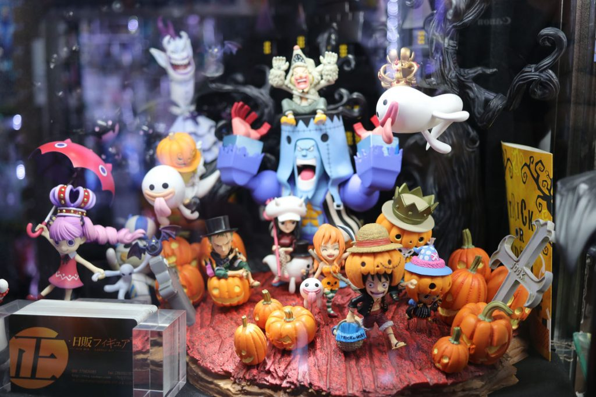
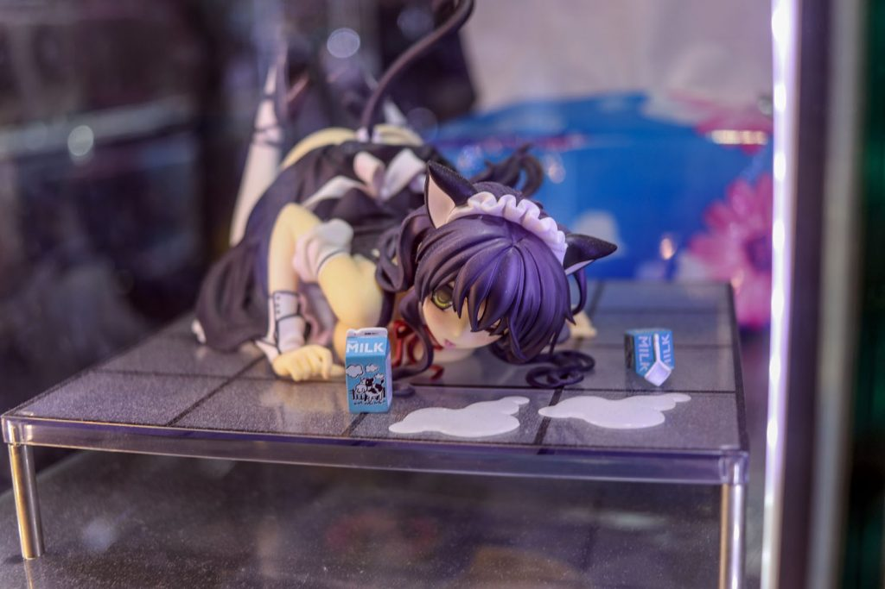
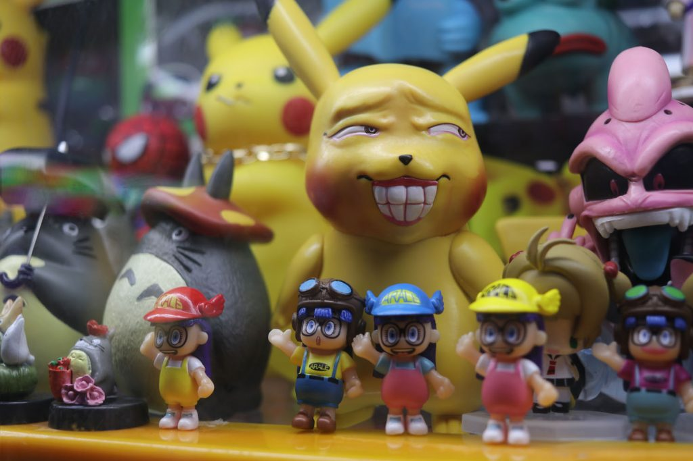
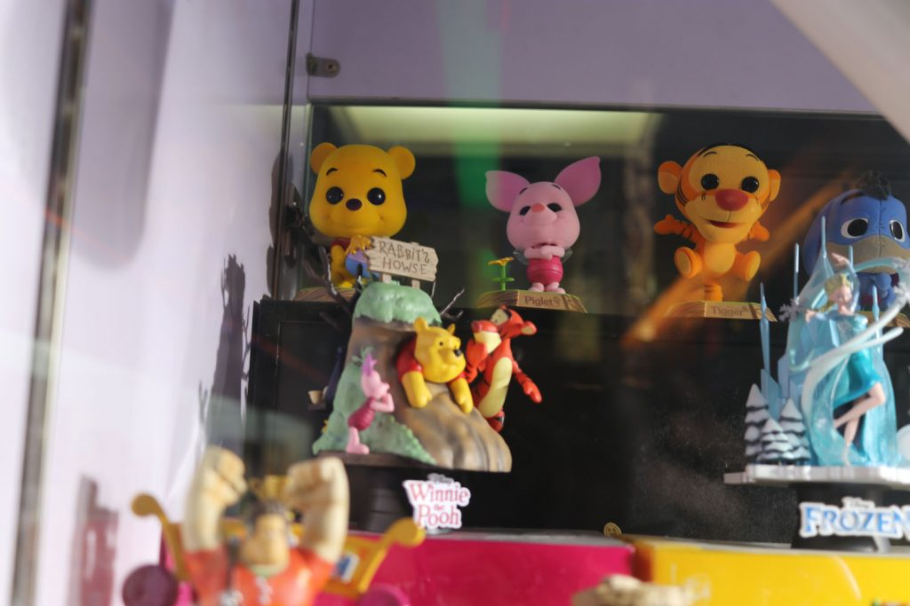
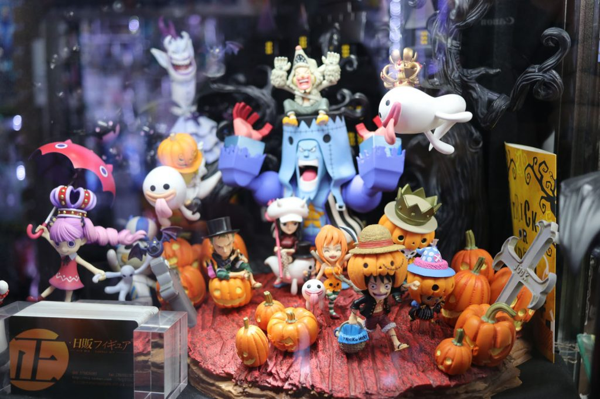
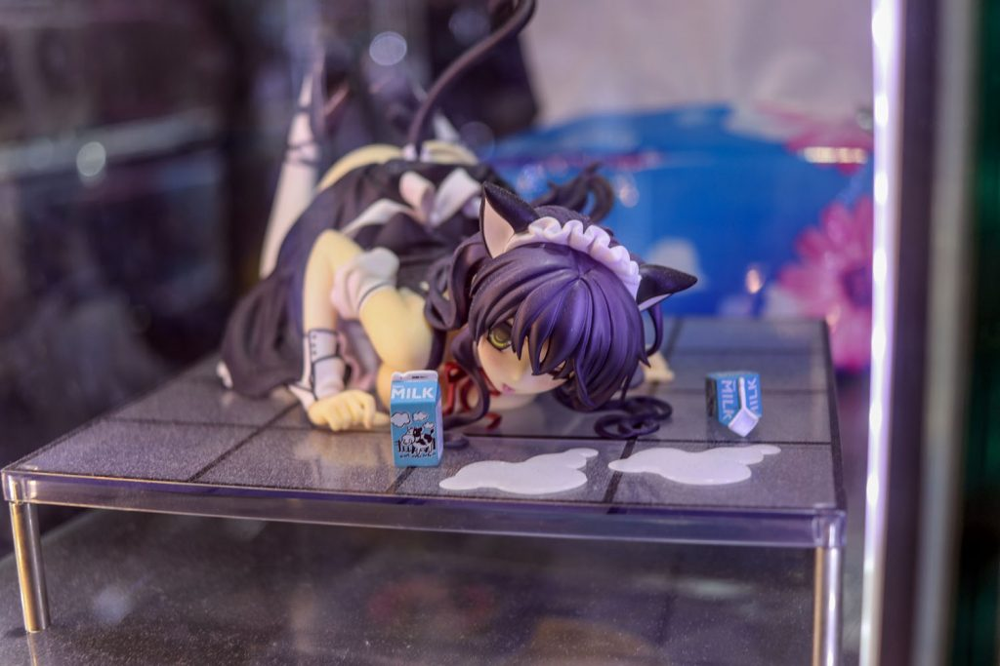
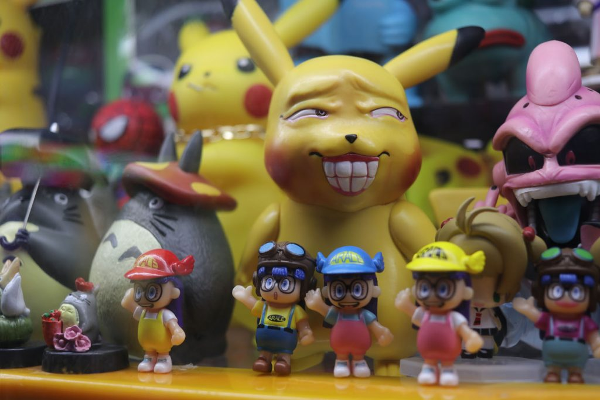
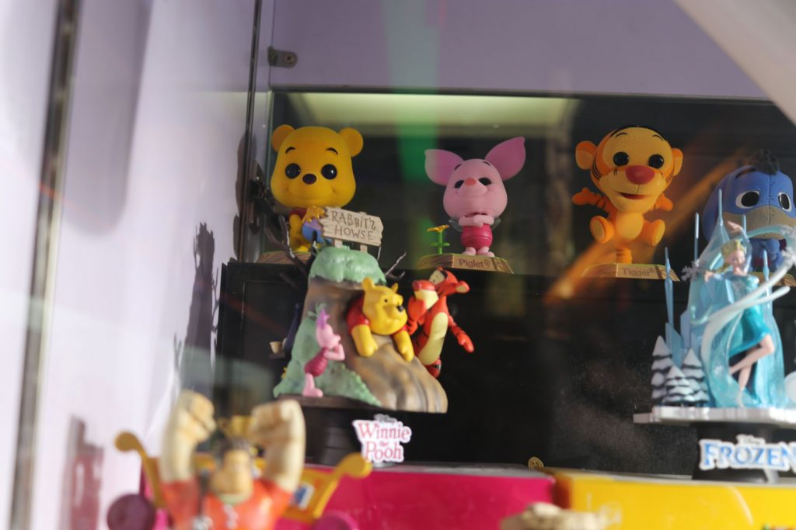
A fal
Utolsó napot a falon töltöttük. Mit lehet írni a falról, amit más nem írt még le? Semmit. Hosszú és fárasztó túra hegyre fel, hegyről le. Mi egy olyan szakaszhoz mentünk, ami turisták által nem túl látogatott. Három szakaszból áll a túra.
Először végig mentünk egy falrészen, ami elvezetett egy pihenő helyre egy gát felett fekvő víztározó tó mellett. Innen egy újabb fal szakaszra másztunk fel. Akinek már az első is túl sok volt az hátramaradt a pihenőbe. Végül a harmadik szakaszon nem falon mentünk vissza a pihenő helyre, hanem a gát által fent kialakított tavat megkerülve jutottunk vissza, ezzel könnyítve az addigra már tényleg fárasztó túrán. A Google Térképes ultrapontos kattintgatós vonalzós mérés szerint 6 kilométeres utat tettünk meg, de ebben nincsenek benne az emelkedők, szóval ennél hosszabb és fárasztóbb. De megérte. A falat látni kell egyszer, ha az ember teheti.
 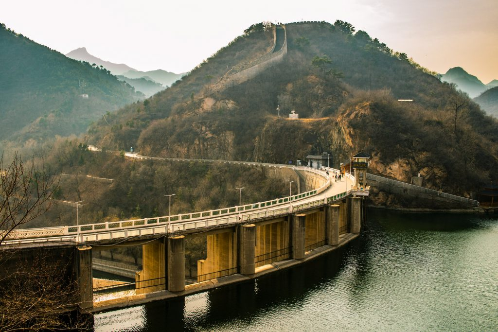
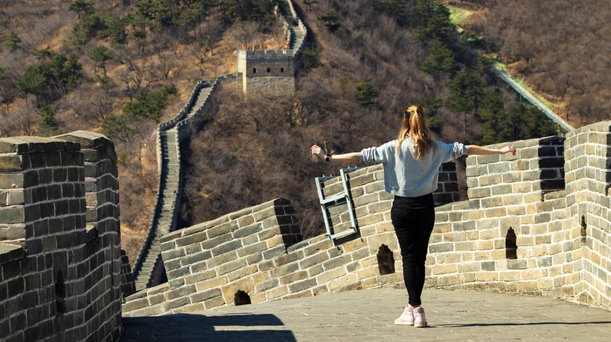
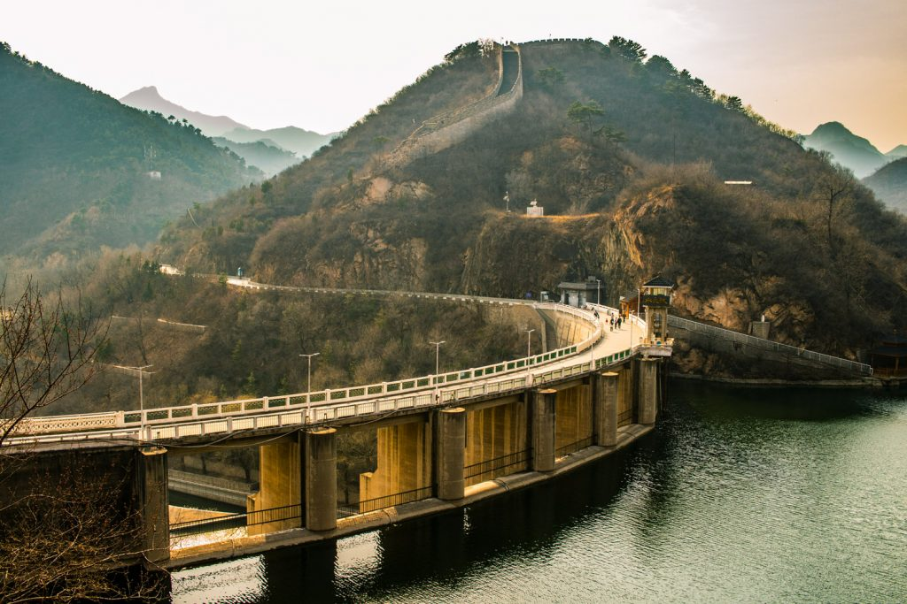
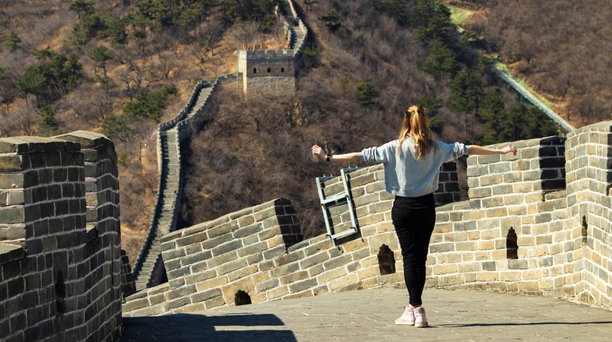
Hazaút
20 yuanért egy busz kivitt minket a repülőtérre. Ott Lilla visszakapta a pénzét a tömeközlekedéshez használt kártyáért. Én megtartottam emlékbe. A security itt kicsit húzósabb volt. A zippo öngyújtómat elvették, azóta annyival okosabb vagyok, hogy ki kellett volna vennem a vázból és csak a gyújtószerkezetet oda adni nekik. A repülő út eseménytelen volt. Minszkben szálltunk át, ahol a tranzit zónában két euróba kerültek a fél literes vodkák. Amiből nem vettem.
Végül Budapesten kiderült, hogy a bőröndöm Kínában maradt. Írtak jegyzőkönyvet, elindult a folyamat, amin át végül két nappal később már kezemben tarthattam a bőröndöt. Amiből kiszedték a Mao öngyújtómat is, szóval Peking megtartotta minden tűzem. Erről amúgy kaptam egy hivatalos papírt is, még az ellenőr száma is rajta van. De ennyi keserűség belefér minden utazásba, kár, hogy a legvégére jutott.
Ettől függetlenül végig nagyon jól éreztem magam és még napokkal utána is meg volt az érzés reggelente, hogy menni kéne világot látni. Egy hét lehet nem elég Pekingre. De úgy gondolom rengeteg dolgot néztünk meg. Ha az ember előre tervezi miket szeretne látni, nem nehéz jól kihasználni az időt.